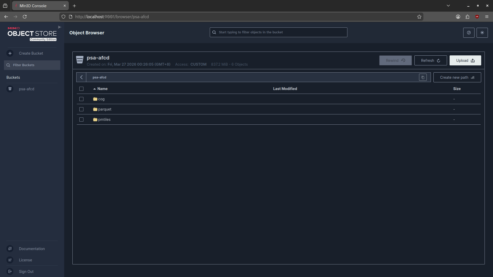

<!-- .slide: class="title-slide" data-background-color="#091A31" --> <img src="../static/img/bnhr-2024-fordarkbg-main-720.png" class="title-logo" alt="BNHR"> <!-- <p class="project-context">PSA AFCD OPEN GEOSPATIAL STACK TRAINING</p> --> <h1>cloud-native <br><span style="color: var(--bnhr-accent-green);">geospatial</span></h1> <!-- <p class="subtitle">Day 4 Morning — Building Web Applications on the Open Stack</p> --> <p class="url">bnhr.xyz</p> --- <!-- .slide: class="toc-slide" --> ## Contents --- ## Retrieval practice *Without looking at your notes:* What URL does MapLibre use to request a tile from GeoServer? What happens to your GeoServer container when 500 users request tiles simultaneously? Note: No slides. Prompt on the board. 2 min individual write, cold-call 3–4 participants. Expected answers: the WMS GetMap URL with {bbox-epsg-3857} substitution; the GeoServer container becomes a bottleneck — every tile request hits the server, renders it, consumes CPU and memory. Transition: "That bottleneck is the problem cloud native formats solve. This morning we look at formats that let the data serve itself — no server required for tile delivery." --- <!-- .slide: class="section-slide" data-background-color="#0c2340" --> <img src="../static/img/bnhr-2024-fordarkbg-main-720.png" class="title-logo" alt="BNHR"> # Cloud Native<br>Geospatial --- ## HTTP range requests — the one design principle all cloud native formats share - A client requests **specific bytes** of a file over HTTP — not the whole file - The file sits on any static file server: S3, CDN, or a basic nginx container - No database process needed; spatial indexing is **embedded in the file itself** - Any number of concurrent readers — zero per-request server overhead Contrast with this week: PostGIS needs a running PostgreSQL process. GeoServer needs a running Java process. Cloud native formats eliminate those requirements for **the read path**. Note: The key concept is HTTP 206 Partial Content. A client sends "I want bytes 10,000–20,000 of this 500 MB file" — the server returns just those bytes. Because the file format encodes its own spatial index in the header, those bytes correspond to a specific geographic region. No rendering process. No database query. The file serves itself. --- ## Cloud native formats add a distribution layer — they don't replace the stack <div class="two-column"> <div class="column"> <div class="column-header">Traditional stack (Days 1–4)</div> **PostGIS** — live operational data, concurrent writes **GeoServer** — OGC WMS/WFS for GIS clients **GeoNode** — organizational catalog and governance </div> <div class="column"> <div class="column-header">Cloud native layer (Day 5)</div> **COG** — large static rasters, partner distribution **GeoParquet** — analytical exports, remote queries **PMTiles** — stable vectors, high-traffic web maps **STAC** — machine-readable asset discovery </div> </div> Note: Repeat this message throughout the morning: PostGIS is not replaced. GeoServer is not replaced. GeoNode is not replaced. Cloud native is the distribution layer you put in front of the stack when GeoServer becomes the bottleneck, or when partners need data without a server connection. --- <!-- .slide: class="subsection-slide" data-background-color="#0c2340" --> <span class="section-label">Cloud Native Geospatial</span> # S3-Compatible<br>Storage <img src="../static/img/bnhr-2024-fordarkbg-main-720.png" class="title-logo" alt="BNHR"> --- ## Cloud native formats live on any HTTP server that supports range requests Cloud-native formats — COG, GeoParquet, PMTiles — can live natively in S3-compatible object storage. <div class="two-column"> <div class="column"> <div class="column-header">Proprietary + Services</div> AWS S3 · GCP Cloud Storage · Azure Blob Storage All support HTTP range requests natively Scales globally without infrastructure management </div> <div class="column"> <div class="column-header">Open-source + Self-hosted</div> **MinIO** — open source, high-performance object storage system Compatible with Amazon S3 Same `boto3`, `s3fs`, GDAL `/vsis3/` commands Point to `your own server` instead of `amazonaws.com` </div> </div> Note: MinIO is already in the training Docker stack. The commands participants learn today — s3fs, boto3, mc cp — are identical to what they would use on AWS S3. Migration to production is a one-line configuration change. --- <!-- .slide: class="subsection-slide" data-background-color="#0c2340" --> <span class="section-label">Cloud Native Geospatial</span> # COG —<br>Cloud Native<br>Raster <img src="../static/img/bnhr-2024-fordarkbg-main-720.png" class="title-logo" alt="BNHR"> --- ## A COG lets a client read only the bytes covering the area it needs - **Internal tiles** are spatially ordered — adjacent pixels are stored near each other in the file - **Overviews** (lower-resolution versions) are embedded and seekable — zoom out loads overview tiles, not full resolution - The **file header** describes the entire spatial layout — a client reads the header first, then requests only the bytes for the area of interest ```bash # Create a COG from a regular GeoTIFF rio cogeo create input.tif output_cog.tif ``` Note: A regular GeoTIFF stores data row by row — reading a small spatial area may require downloading large contiguous blocks. COG reorders storage so spatial proximity maps to byte proximity. GDAL's /vsicurl/ driver reads the COG header over HTTP, computes byte offsets for the requested window, and issues range requests for only those bytes. --- ## COG replaces GeoServer WCS for large static rasters shared with partners PSA use case: a **provincial palay yield raster** for the Philippines. As a regular GeoTIFF — every analyst downloads the full 2 GB file. As a COG on S3 — QGIS or rasterio requests only the bytes covering the region the analyst zoomed to. <div class="two-column"> <div class="column"> <div class="column-header">GeoServer WCS</div> Server renders a crop for every request Scales with server capacity — bottleneck at load Right for: live data that changes frequently </div> <div class="column"> <div class="column-header">COG on S3</div> File serves itself from object storage Scales with S3 — zero server overhead Right for: large, mostly-static rasters shared broadly </div> </div> Note: GeoServer WCS is right when the raster is frequently updated and partners need the latest version immediately. COG is right when the raster is stable and the cost of maintaining a WCS endpoint isn't justified by update frequency. --- <!-- .slide: class="subsection-slide" data-background-color="#0c2340" --> <span class="section-label">Cloud Native Geospatial</span> # geoparquet —<br>cloud-native<br>vector <img src="../static/img/bnhr-2024-fordarkbg-main-720.png" class="title-logo" alt="BNHR"> --- ## A GeoParquet file on S3 is both the analytical format and the open data API From Day 1: GeoParquet is the DuckDB/analytical tier format — column pruning, bounding box pushdown, no server required. Day 5 adds the cloud dimension: **the same queries work remotely**. ```python import duckdb # Query a GeoParquet file directly from S3 — no PostGIS connection needed duckdb.execute(""" SELECT province, COUNT(*) AS farm_count FROM 'http://localhost:9000/psa-data/palay_distribution.parquet' GROUP BY province ORDER BY farm_count DESC """) ``` Note: PSA use case: publish palay_distribution as GeoParquet on a public S3 bucket. Partner agencies query it directly with DuckDB — no PostGIS connection, no GeoServer endpoint, no GeoNode login. The three-tier hierarchy from Day 1 (PostGIS → DuckDB/GeoParquet → Sedona) now has a cloud distribution channel: GeoParquet on S3 is both the analytical format and the open data distribution format. The file is the API. Partners with DuckDB installed can query it as if it were local. --- <!-- .slide: class="subsection-slide" data-background-color="#0c2340" --> <span class="section-label">Cloud Native Geospatial</span> # PMTiles —<br>Vector Tiles in<br>a Single File <img src="../static/img/bnhr-2024-fordarkbg-main-720.png" class="title-logo" alt="BNHR"> --- ## PMTiles delivers vector tiles from a static file — no tile server needed - A single-file archive of vector tiles using the same MVT format GeoServer produces - **Spatial index in the file header** — a client requests only the tile bytes it needs - MapLibre or Leaflet reads tiles directly from S3 over HTTP range requests The tile format is **identical** to GeoServer's vector tile extension output. The difference is delivery: GeoServer renders tiles dynamically from PostGIS; PMTiles delivers pre-generated tiles from a static file. ``` PostGIS → GeoJSON (ogr2ogr) → PMTiles (tippecanoe) → S3 (MinIO) ``` Note: Emphasize: same MVT format, different delivery path. Participants who understand WMS/WFS from Day 2 can think of PMTiles as "the same tiles, but pre-generated and stored in a file instead of rendered on demand." The pmtiles.js library handles the HTTP range request protocol transparently in the browser. --- ## PMTiles replaces GeoServer for stable, high-traffic reference layers PSA use case: the `seaweed_farms` layer on the Regional Agricultural Dashboard. Each pan and zoom sends a WMS request to GeoServer. At 500 concurrent users, GeoServer becomes the bottleneck. With PMTiles on S3 — MapLibre requests tiles from MinIO. GeoServer load drops to zero for this layer. <div class="two-column"> <div class="column"> <div class="column-header">GeoServer WMS</div> Right for: live operational data that changes frequently Pre-generation not feasible </div> <div class="column"> <div class="column-header">PMTiles on S3</div> Right for: stable reference layers, high-traffic serving Pre-generation feasible — regenerate per quarterly release </div> </div> Note: The key question participants need to ask: how often does this data change? PMTiles requires regenerating the file when data changes. For seaweed_farms updated quarterly, that's fine. For a live GPS tracking layer, it's not. This trade-off comes back in the think-pair-share during Step 2 of the workshop. --- <!-- .slide: class="subsection-slide" data-background-color="#0c2340" --> <span class="section-label">Cloud Native Geospatial</span> # STAC —<br>Catalog for<br>Cloud Native Assets <img src="../static/img/bnhr-2024-fordarkbg-main-720.png" class="title-logo" alt="BNHR"> --- ## STAC and GeoNode are both catalog layers — for different audiences <div class="two-column"> <div class="column"> <div class="column-header">GeoNode (Day 3)</div> Full portal — upload, metadata editing, permissions, WMS previews Designed for **human interaction** and organizational governance A data manager uploads a layer and configures who can see it </div> <div class="column"> <div class="column-header">STAC</div> JSON-based API spec — each item describes one asset with its spatial extent, temporal coverage, and asset URLs Designed for **programmatic search** by other systems and pipelines A partner agency's script queries new datasets automatically every night </div> </div> Note: Both catalogs coexist: GeoNode manages the PostGIS-backed layers internally; STAC indexes the COG/GeoParquet exports as the distribution interface. They serve different consumers. GeoNode is the governance layer; STAC is the machine-readable window onto the cloud native exports. --- ## STAC enables automated partner pipelines that need no human in the loop PSA use case: a STAC catalog of all cloud native exports (COG rasters, GeoParquet vectors) derived from PSA AFCD data. A partner agency's pipeline can: 1. Query the STAC API for crop datasets updated after a given date 2. Download only what changed since the last run 3. Load it directly into their analytical environment — **no GeoNode login, no human contact** Note: Show this STAC item JSON in the browser during Demo 3 alongside a GeoNode resource page. Same metadata fields — different interface. STAC is machine-readable first. GeoNode is human-oriented first. --- ## Cloud native helps where the stack has a bottleneck or a boundary <div class="compact"> | Question | Traditional stack | Cloud native layer | |---|---|---| | Live operational data, concurrent writes? | **PostGIS** | — | | OGC WMS/WFS for GIS clients? | **GeoServer** | — | | Organizational catalog and governance? | **GeoNode** | — | | Large static raster — partner distribution? | GeoServer WCS | **COG on S3** | | Stable vector layer — high-traffic web map? | GeoServer WMS | **PMTiles on S3** | | Analytical export — partner queries? | GeoPackage emailed | **GeoParquet on S3** | | Machine-readable asset discovery? | GeoNode API | **STAC** | </div> *"Everything we built this week is still running. Cloud native is what you put in front of it when GeoServer becomes the bottleneck, or when partners need data without a server connection."* Note: Return to this table during the demo and workshop. It is the synthesis of the entire lecture. Every cloud native format decision maps to one row. Participants should be able to point to a row of this table to justify every format choice they make in Step 4 of the workshop. --- ## Traffic light check-in <div class="two-column split-2-1"> <div> 1. I understand how HTTP range requests work and why they matter for COG and PMTiles 2. I can name one PSA AFCD dataset that would benefit from a cloud native format and explain which format fits it. 3. I understand when NOT to use a cloud native format. 4. I understand that cloud native formats are a distribution layer on top of the existing stack and not meant to fully replace PostGIS, GeoServer, or GeoNode. 5. I understand the difference between STAC and GeoNode and when I would use each. 6. I can describe how I can create a COG, parquet, or pmtiles file. **Green** = confident | **Yellow** = mostly | **Red** = still unclear </div> <div style="display:flex;align-items:center;justify-content:center;"> <img src="../static/img/traffic-check-in.png" alt="Traffic light check-in QR code" style="max-width:100%;max-height:420px;"> </div> </div> Note: Adjustment rules: Statement 1 mostly red/yellow → open a browser network inspector at the start of Demo 1, show the HTTP 206 range request headers live before running any code. Statement 2 uncertain → redraw the pipeline on the board: ogr2ogr (PostGIS → GeoJSON) → tippecanoe (GeoJSON → PMTiles) → mc cp (PMTiles → MinIO). Statement 3 mostly uncertain → during We Do Step 4, ask each participant to name one dataset from their Day 1 exit ticket and apply the decision framework. Statement 4 confused → return to the decision table and ask "how often does this data change?" — emphasise that PMTiles and COG require regenerating the file on every update. Statement 5 confused → in Demo 3, open a GeoNode resource page and a STAC item JSON side by side and narrate the structural comparison. Statement 6 unclear → show the MinIO web UI at localhost:9001 alongside the boto3/s3fs command used in Demo 4 and point to the one-line endpoint change that switches between MinIO and AWS S3. --- <!-- .slide: class="section-slide" data-background-color="#0c2340" --> <span class="section-label">Hands-on Demo</span> # Demo <img src="../static/img/bnhr-2024-fordarkbg-main-720.png" class="title-logo" alt="BNHR"> --- ## Demo flow: from local object storage to cloud-native performance <bnhr-pipeline>Deploy MinIO, COG vs WMS/WCS, pmtiles vs GeoJSON/WFS, Creating cloud-native files</bnhr-pipeline> Note: Walk participants through the four demo steps in order. Each builds on the previous — MinIO must be running before any format demos can happen. Keep explanations short; let the performance difference speak for itself before explaining why. --- ## part 1.1: local object storage with MinIO - MinIO can be run using Docker — access the console at `localhost:9001` - MinIO acts as a local S3-compatible object storage for all demos - Download the `docker-compose-minio-mc.yml` file. - Run MinIO with: ``` docker compose -f docker-compose-minio-mc.yml up -d ``` Note: Spin this up before the session starts. Participants should be able to open localhost:9001 in their browser and see the MinIO console. Confirm buckets and sample data are visible before proceeding to the format demos. --- ## part 1.2: local minio <p></p> --- ## part 1.3: upload data to MinIO - create 3 folders (cog, parquet, pmtiles) - upload data (e.g. provided data) into each of them according to their format - Sample directory structure should be like: ``` psa-afcd - cog - intramuros.tif - up-urban-farm.tif - parquet - phl_adm4.parquet - pmtiles - phl_adm.pmtiles - phl_adm3.pmtiles - phl_adm4.pmtiles ``` --- ## part 2: COG vs WMS/WCS — raster performance in QGIS - Upload the **same raster dataset** to GeoNode and MinIO. - Open QGIS. - Load the **same raster dataset** three ways. <div class="two-column"> <div class="column"> <div class="column-header">GeoNode (WMS & WCS)</div> Connect WMS and WCS service in QGIS Browser ``` http://localhost/geoserver/geonode/[service] ``` Fetches the full rendered image per request </div> <div class="column"> <div class="column-header">COG from MinIO</div> Data Source Manager > Raster > Protocol ... ``` http://localhost:9000/psa-afcd/cog/up-urban-farm.tif ``` </div> </div> Pan and zoom to show the difference in load speed and responsiveness. Note: Key message: COG shifts the work from the server to the client and the network. Internal tiling and overviews mean QGIS can request only the pixels visible in the current viewport. Let participants observe the speed difference before explaining why — the experience lands better than the explanation. --- ## part 3: PMTiles vs GeoJSON/WFS — vector performance in a web map Load the **same vector dataset** two ways: <div class="two-column"> <div class="column"> <div class="column-header">GeoJSON via WFS</div> phl_adm3.geojson - 500MB+ size pre-upload to GeoNode Full dataset downloaded on load Slow at scale; GeoServer under load </div> <div class="column"> <div class="column-header">PMTiles from MinIO</div> phl_adm3.pmtiles - 50MB size on MinIO Pre-tiled, single-file archive Range-request delivery — no tile server </div> </div> Compare rendering speed, tile loading behavior, and zoom-level responsiveness. Note: Key message: PMTiles removes the need for a tile server while outperforming WFS at scale. Emphasize: same MVT format as GeoServer vector tiles — different delivery path. The pmtiles.js library handles HTTP range requests transparently in the browser. --- ## Step 4.1.1: creating cloud-native formats - COG gdal (3.1+) ``` gdal_translate input.tif output_cog.tif -of COG -co COMPRESS=LZW ``` rio-cogeo ``` rio cogeo create in.tif out.tif --cog-profile deflate ``` --- ## Step 4.1.2: creating cloud-native formats - COG validate (rio cogeo) ``` rio cogeo validate test.tif ``` --- ## Step 4.2.1: creating cloud-native formats - pmtiles - Install tippecanoe - tippecanoe works on Linux and OSX (no Windows) - On Windows, use wsl (Open your Ubuntu WSL) ``` git clone https://github.com/felt/tippecanoe.git cd tippecanoe make -j make install ``` Note: Key message: the conversion step is a one-time cost; the performance gains are permanent. Show how to upload the resulting files to MinIO using mc cp or boto3. Emphasize that these formats work with existing tools — no new stack required. --- ## Step 4.2.2: creating cloud-native formats - pmtiles ``` tippecanoe -o file.pmtiles [options] [file.json file.json.gz file.fgb ...] ``` Basic ``` tippecanoe -zg -o out.pmtiles --drop-densest-as-needed in.geojson ``` `-zg`: Automatically choose a maxzoom that should be sufficient to clearly distinguish the features and the detail within each feature --- ## Step 4.2.3: creating cloud-native formats - pmtiles Admin boundaries (continuous polygons) ``` tippecanoe -zg -o out.pmtiles --coalesce-densest-as-needed --extend-zooms-if-still-dropping in.geojson ``` `--coalesce-densest-as-needed`: If the tiles are too big at low or medium zoom levels, merge as many features together as are necessary to allow tiles to be created with those features that are still distinguished `--extend-zooms-if-still-dropping`: If even the tiles at high zoom levels are too big, keep adding zoom levels until one is reached that can represent all the features --- ## Step 4.2.4: creating cloud-native formats - pmtiles Merge all PMTiles files in current folder into single file ``` tile-join -o merged.pmtiles *.pmtiles ``` `--coalesce-densest-as-needed`: If the tiles are too big at low or medium zoom levels, merge as many features together as are necessary to allow tiles to be created with those features that are still distinguished `--extend-zooms-if-still-dropping`: If even the tiles at high zoom levels are too big, keep adding zoom levels until one is reached that can represent all the features --- <!-- .slide: class="section-slide" data-background-color="#0c2340" --> # <span style="color: #ffa500">Questions?</span>